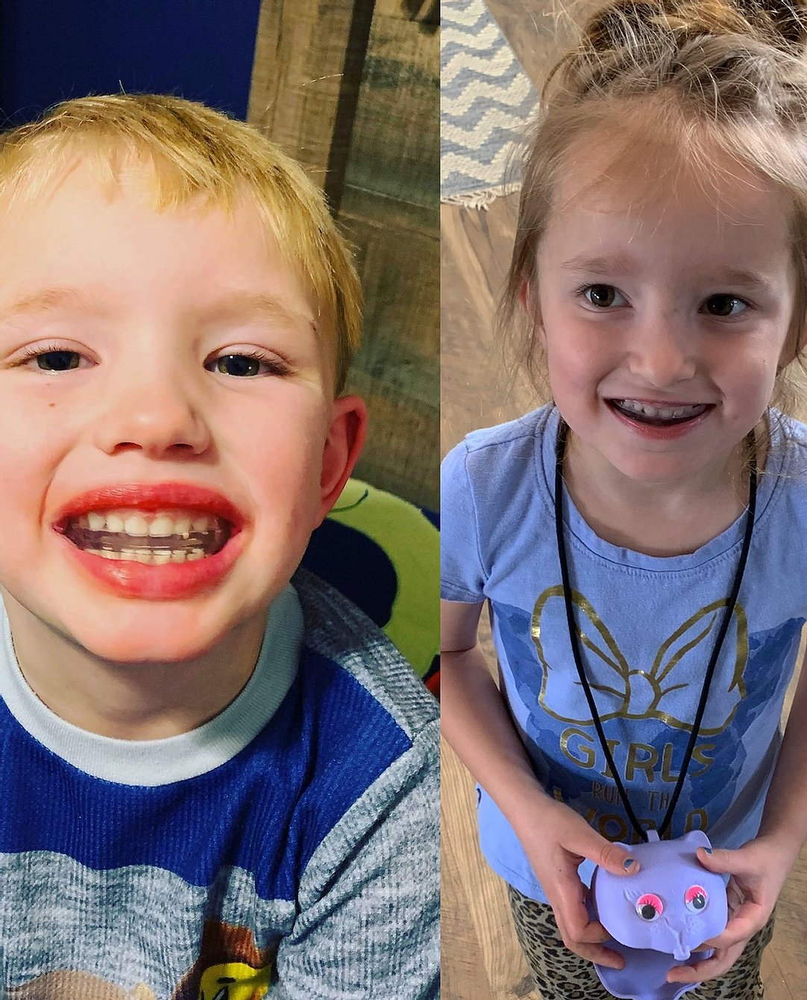

Kids' Corner
FAQ
- What about kids? and why it matters
- The dangers of mouth breathing
- Conventional "Treatment" Options
- Straightening Teeth WITHOUT Braces
- Why start treatment early?
- Comprehensive Diagnosis
- Habit Elimination
- Arch Expansion, TMJ Positioning, Soft Tissue Correction
- Teeth Straightening for Lifetime Retention
The Airway
Why does it matter? When a child’s airway is narrow, underdeveloped or constricted in any way, the child will struggle to receive enough oxygen at night and may resort to mouth breathing, which compounds this issue.
Oral Appliance Therapy can help open up the airway of a growing child by bringing the upper and lower jaws forward and allowing the airway to widen. An open airway increases the oxygen the child receives to the brain, which restores the brain's function for the next day. This in turn leads to an improved immune system, hormonal system and an overall healthier child.
The Dangers of Mouth Breathing
Mouth Breathing and Compromising the Airway
Mouth breathing is not the same as nasal breathing and often leads to further compromise of the airway. The dangers of mouth breathing include:
- Can be a contributing factor to a compromised airway and the need for orthodontic treatment
- Improper exchange of carbon dioxide and oxygen
- Prevents the proper function of the tongue and other orofacial muscles that children need to speak, swallow, chew and function properly
- Can cause the delicate tissues of the tonsils and adenoids to swell and become enlarged, further impacting a restricted airway
Conventional "Treatment" Options
The Problem with Conventional Treatment Options - they don’t treat the airway. Before now, treatment options such as prescription drugs, surgery, clinical therapy, academic tutors, sleeping, and years in braces have been the most commonly prescribed "solutions".
None of these conventional treatments can promote or develop a child’s airway and help them get the oxygen and sleep they need to be healthy. Conventional treatments have been limited and ineffective, mainly because they address the symptoms rather than the potential root cause.
An oral appliance addresses the root cause early-in-life, because early treatment is crucial. When children are young, their bodies are able to adjust and mold easily, particularly in their mouth and their bone structure. Crowded teeth may force the tongue forward against their teeth, narrowing their dental arch and constricting the airway. Breathing properly is necessary for the health of a child.
In addition to addressing the airway issues and alleviating sleep disordered breathing oral appliances can properly align the teeth.
Straightening Teeth WITHOUT Braces
At nearly HALF the cost of braces, therapy with an oral device is a revolutionary departure from traditional orthodontics into an early, non-invasive, natural approach to straightening teeth. It works with natural growth patterns, teaching the tongue to stay in proper position, keeping lips closed to increase nasal breathing, proper tongue position when swallowing and normal arch length.
Sleep disordered breathing in children can be noted by the following symptoms:
- Restless sleep
- ADD/ADHD
- Bedwetting
- Allergies
- Nightmares
- Anger
- Difficult in school
- Frequent infections
Sleep Disordered Breathing increases risk of ADD/ADHD by 50% (Bonuck, 2012) Children that exhibit ADD/ADHD may have a sleep disorder that keeps them in a stage of sleep that does not allow for growth and development. The brain does not have the ability to heal due to lack of a restorative sleep stage.
Bedwetting and snoring are common in children with sleep disordered breathing again due to the fact that they do not spend enough time in a restorative healing stage but more in a restless one. When they can’t breathe, they don’t sleep properly. Snoring is not normal. It is the brain’s way of alerting us to an airway problem. Oral Appliance therapy not only addresses Sleep Disordered Breathing symptoms, but also corrects oral habits, which then corrects FUTURE issues.
Why start treatment early?
Children experience a number of growth spurts leading up to puberty. Each of those growth spurts can be used to harness the natural forces of the body to guide ideal jaw and tooth positioning. "Waiting until all the permanent teeth are in" is an archaic, deficient methodology for treating malocclusion, and more often than not, "traditional orthodontics" will straighten teeth but will not eliminate unhealthy oral habits, which will lead to either needing lifetime retention (a permanent retainer) or relapse of teeth in adulthood.
Poor oral habits such as mouth breathing, thumb sucking, and an anterior tongue thrust cause a myriad of chronic inflammatory responses as well as dental malocclusion issues. It's important to note... These habits & malocclusions DO NOT SELF CORRECT! And they only get more difficult to treat with age.
Oral appliance therapy establishes nasal breathing which increases oxygen intake and ensures proper progression through stages of sleep. (what the brain needs to heal and promote growth). They eliminate bad habits such as mouth breathing, thumb sucking, tongue thrust, reverse swallow and eliminates open bite malocclusions. They train the tongue to a position that allows the airway to remain open, promote proper swallowing and proper speech development.
We want to start early!!! Habit correctors can start as early as two years of age. Ideally we want to begin guiding the tongue as soon as possible but a pronounced crowding in the dentition of a five year old, open mouth postures and a weak chin are signs that the skeletal growth is off. Craniofacial growth between 5 and 7 years of age is critical to capturing correct arch width. We need to have enough space for the adult teeth to erupt into proper position. The same appliance that helps to open the airway also helps maintain craniofacial growth and gives the dental arches and teeth a guide to grow correctly. Greater than 80% of children that begin this therapy will not need subsequent orthodontic treatment. An added bonus to managing the craniofacial growth for proper airway is that the complete complex grows in a normal pattern, hence the teeth will too.
Primary causes of sleep disordered breathing in children:
- Mouth breathing
- Narrow Palate
- Poor jaw relationships
- Improper tongue placement
Signs and symptoms of sleep disordered breathing:
- ADD/ADHD
- Bedwetting
- Grinding
- Headaches
- Allergies
- Speech Problems
- Throat Infections
- Daytime Sleepiness
- Irritability
- Snoring
Benefits to oral appliance therapy:
- Provides for healthy TMJ
- Straightens teeth
- No root resorption, devitalization, white spot lesions
- Greater ability to guide skeletal growth
- Opeen airway
- Reinforces good oral habits & nasal breathing
- Soft materials worn only a few hours per day
- No bands or brackets attached to the teeth
Comprehensive Diagnosis
"You can't fix what you can't see"... this is the basis for a relatively common conversation we have with our new patient families. We hear from them, "This is the first time I've heard that my child has an issue that can or should be treated, but he/she has been seeing a dentist for years."
Typically what is happening is that your dentist is focused on the "sickcare" side of dentistry, and more than likely, it is a combination of your existing dentist not being trained in this comprehensive treatment as well as he or she not having the extensive diagnostic tools that are needed to identify and treat these issues.
In addition to traditional dental xrays that most people are familiar with, patients may undergo a CBCT scan to evaluate jaw, sinus, nasal, and airway health; handfilm x-ray to determine skeletal growth projection; digital scan for 3D dental models to iterate on treatment options; cephalometric x-ray; home sleep test; and electrodiagnosis and T-scan for TMJ disk placement review.
These tools facilitate a comprehensive baseline so that we can build a predictable therapeutic plan, one that is rooted in our functional approach to oral health.
Habit Elimination
In many pediatric dentistry cases, elimination of whatever habit(s) may be present for a child will correspond with a reduction in many chronic, systemic inflammatory symptoms that child was previously experiencing. Speech difficulties? Resolved. Chronic runny nose or sore throat? Fixed. Teeth grinding? Gone.
We utilize a suite of various removable and fixed appliances in conjunction with behavioral modification techniques, routine office visits, and telemedicine checks to ensure our patients have success in this critical process. With the reduction in the habit, the oral environment will regain the proper balance of natural forces between tongue, lip, cheeks, jaw, and teeth, and the child will then be prepared to have improved eruption of adult teeth.
 To think of it another way, on average, a person swallows approximately 2x/min when awake during the day and 1x/min while sleeping. So if your child is spending a few hours during the day and at night thumbsucking, for example, that is a few hundred malpositioned swallows occuring every single day that is reinforcing improper tongue and tooth placement. Thus eliminating that habit sooner rather than later will minimize the amount of "damage" done by the imbalanced forces in the mouth.
Arch Expansion, TMJ Positioning, Soft Tissue Correction
Pending patient needs as he or she progresses through treatment, we include all necessary auxiliary orthopedic and orthodontic appliances and frenum reduction to ensure we achieve the results we need to do so. While our initial treatment plan is consistently in line with what we execute upon over the course of treatment, we do maintain a hefty "toolbox" of advanced, research-based therapies to deliver upon the results each child deserves.
On occasion, we do collaborate with a local ENT team for tonsil and adenoid removal, but we almost always identify this concern prior to initiating treatment for the handful of patients that might need this procedure, and we will indicate the likelihood and timeline of this associated procedure so our patient families understand and know what to expect.
Teeth Straightening for Lifetime Retention
Depending on the age of the child and compliance with the prescribed therapy thus far, we will choose the individually-optimized therapy in conjunction with the parent. This includes but is not limited to Healthy Start by Orthotain.